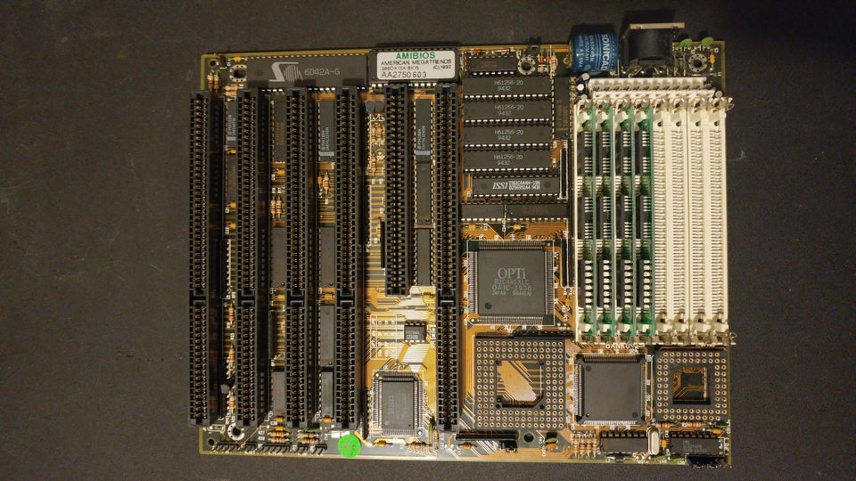
specifications of components in electronics.
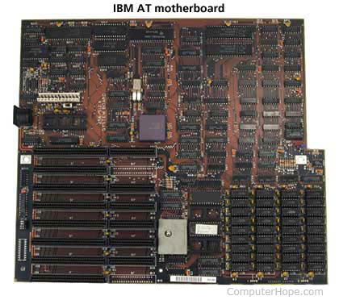
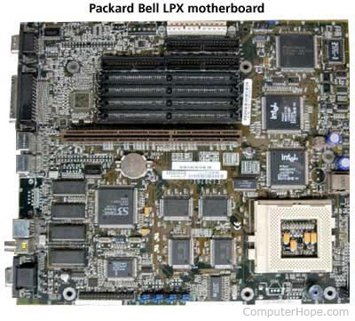
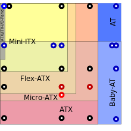
- In a joint effort with DEC and IBM, Intel developed the NLX form factor in March 1997.
- The first motherboards with AGP support were released. One in August 1997 by Intel and one in November 1997 by FIC.
- The microATX motherboard and specification was introduced by Intel in December 1997.
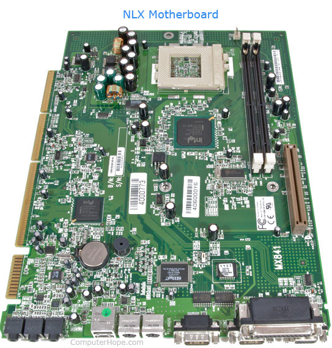 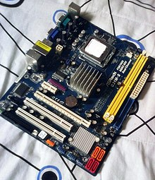
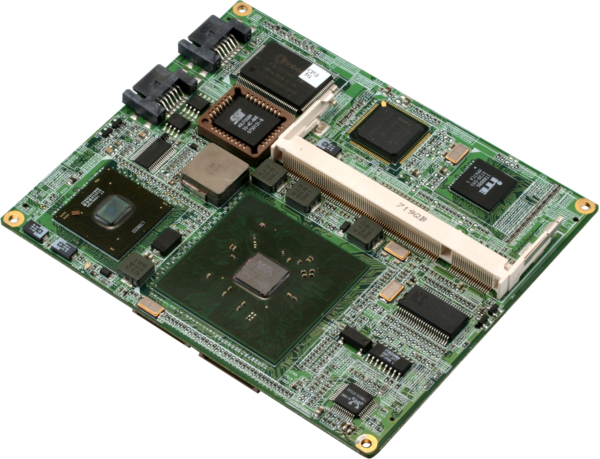
-
TQ-Components introduced The UTX motherboard form factor.
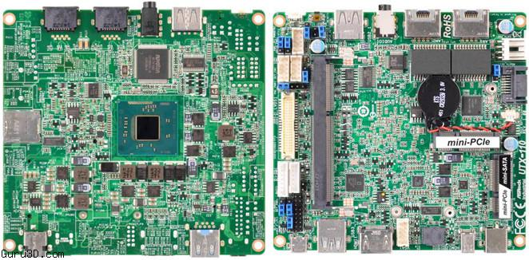 -
In November 2001, VIA Technologies developed The Mini-ITX form factor and was introduced to the market.
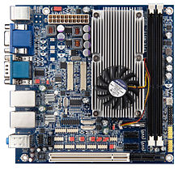
-
The PCI Express standard is introduced by the PCI-SIG. Motherboards with a PCI Express slot were released later the same year.

- In March, The Nano-ITX form factor for motherboards was introduced.
- A new technology was introduced by NVIDIA allowing the ability to link two video cards together on a motherboard. This was called SLI technology.
-
BTX form factor and specifications were released by Intel on February. The microBTX and PicoBTX form factors were also released the same year.
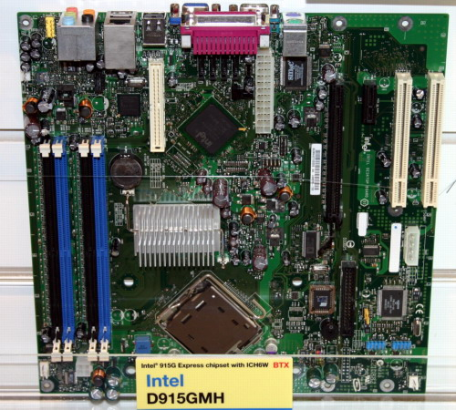 -
In March, Mobile ITX form factor for motherboards were introduced.
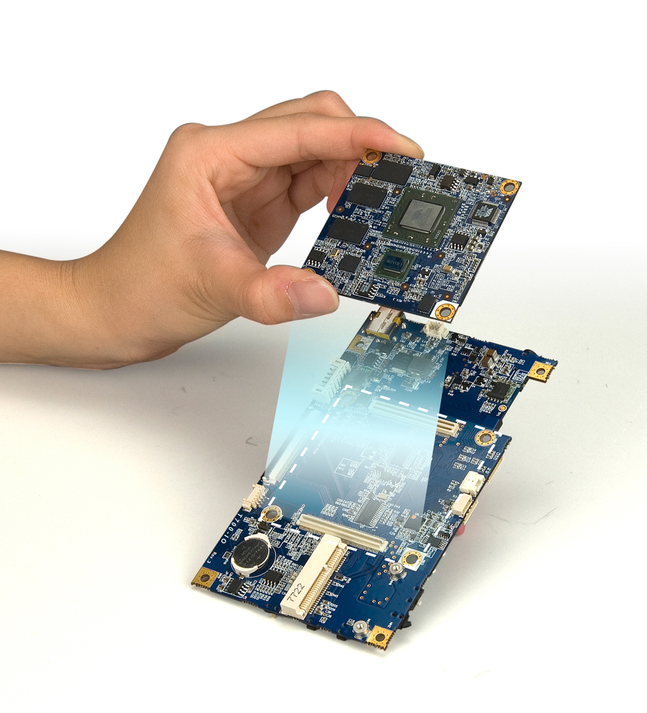
- A group of over 150 companies called the PICMG introduced the COM Express form factor in 2005.
- The XTX motherboard form factor and specification was released in 2005.
- Using two video cards with a microATX motherboard became possible for computer gamers.
-
SWTX motherboard form factor was released by Supermicro.
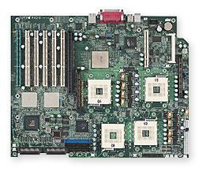
-
In April, PICO-ITX motherboard form factor was introduced.
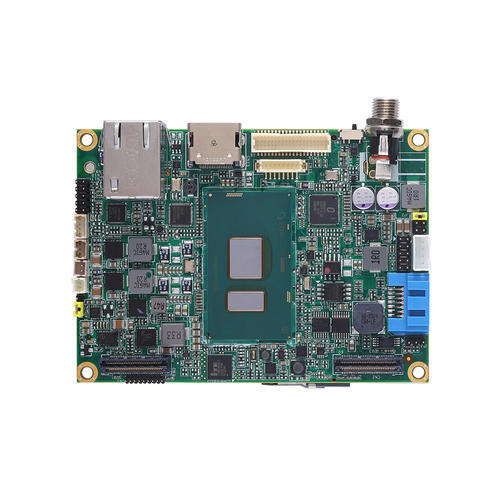 - DTX form factor was developed by AMD. AMD also developed and released the Mini-DTX form factor.